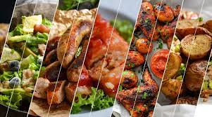
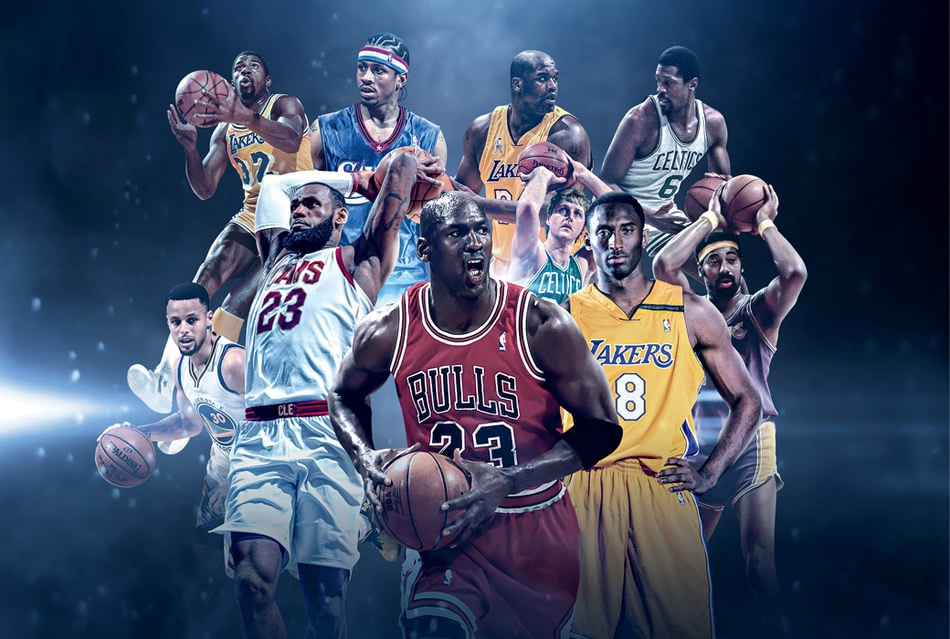

Comida
Con respecto a comida, me gusta todo tipo de comida, desde típicas hasta chatarra .. ejemplo de esto es
que me gusta mucho el caldo de res, al igual que los tamales y el pepian, ya si nos referimos a comida chatarra
me gusta todo lo que es la pizza, hamburguesas, tacos, etc ... algo que si me gusta muchísimo serían los churros,
esa podría decir que es mi postre favorito.

Deportes
En el tema de deportes, desde pequeño jugué lo que es futbol, me interesó todo ese mundo del deporte, luego
tuve unas cuantas operaciones en los pies y ya no volví a jugar futbol, algo que me gusta mucho a parte del futbol
es el basquet bol, me gusta entrenarlo y desde que ya no juego futbol, el basquet ha sido mi deporte principal...
Suelo entrenar 2 veces por semana, miercoles y viernes. Y los domingos estoy en un torneo del mismo jugando las jornadas ya
sean desde las 9 de la mañana hasta la 1 de la tarde.
